Function Graph
Plugin
The Function Graph Plugin is a simple graph display that shows the code blocks of the
function containing the cursor in the Listing.
The display consists of the Primary View and the Satellite View. There is also a group of actions that apply to the entire graph.
Primary View
The Primary View displays the Vertices (or Blocks) and Edges (or Control Flow) of the graph. From this view you can interact with
blocks, both for editing and arrangement.
The graph rendered in the Primary View may represent an undefined function, such as a
subroutine. If this is the case, then the background of the Primary View will be a gray
color, such in the following image:
By default, as changes to the program are detected, the graph
will not relayout to account for these changes. The image below shows the bottom of
the Primary View when the graph has detected changes and is considered stale
Once a graph is stale, you can press the refresh button at any time to have the graph
re-create itself without performing a relayout. The green box in the image above
contains the refresh button. Alternatively, you can press the relayout action to refresh the stale graph and
perform a relayout, which we reposition the vertices of the graph to their preferred
locations.
If you would like to change the default behavior on program changes to perform a full
graph update, then you can change this value via the tool options. You can access these
options by right-clicking in graph and selecting the Properties action. Alternatively,
you can click on the tool's menu bar Edit->Tool Options... to launch
the options. From there you can find the option at Function Graph->
Automatic Graph Relayout
Satellite View
The Satellite View provides an overview of the graph. From this view you may also perform
basic adjustment of the overall graph location. In addition to the complete graph, the
satellite view contains a lens (the white rectangle) that indicates how much of the
current graph fits into the primary view.
When you single left mouse click in the satellite view the graph is centered around the
corresponding point in the primary view. Alternatively, you may drag the lens of the
satellite view to the desired location by performing a mouse drag operation on the lens.
You may hide the satellite view by right-clicking anywhere in the Primary View and
deselecting the Display Satellite View toggle button from the popup menu.
 If the Primary View is painting
sluggishly, then hiding the Satellite View cause the Primary View to be more
responsive.
If the Primary View is painting
sluggishly, then hiding the Satellite View cause the Primary View to be more
responsive.
Detached Satellite
The Satellite View is attached, or docked, to the Primary View by default.
However, you can detach, or undock, the Satellite View, which will put the view into a
Component Provider, which itself can be moved, resized and docked anywhere in the Tool you
wish.
To undock the Satellite View, right-click in the graph and deselect the Dock
Satellite View menu item.
To re-dock the Satellite View, right-click in the graph and select the Dock Satellite
View menu item.
To reshow the Satellite View if it is
hidden, whether docked or undocked, you can press the button. This button is in the lower-right
hand corner of the graph and is only visible if the Satellite View is hidden or
undocked.
Vertices (Blocks)
Each vertex in the displayed graph represents a code block within the graphed function.
The term block is used synonymously with the term vertex. The block display consists
of a header and a code listing. The fields contained in the listing are a subset of the
available fields. You may change the fields displayed from the Edit Code Block Fields action.
The header contains the name of the block, as defined by the label at that location, or
that address if no label exists. The header also contains buttons that allow you to perform
some common operations on the block.
As long as you are within the interaction threshold,
you may interact with the block's listing just as you would with Ghidra's primary Listing.
The following actions are available from the primary view.
Selecting Blocks
Left-clicking a block will select that block. To select multiple blocks, hold down the
Ctrl key (or the equivalent for your OS) while clicking. To deselect a
block, hold the Ctrl key while clicking the block. To clear all selected blocks,
click in an empty area of the primary view. When selected, a block is adorned with a
halo.
You may also select multiple blocks in one action by holding the Ctrl key while
performing a drag operation. Press the Ctrl key and start the drag in an empty
area of the primary view (not over a code block). This will create a bounding rectangle on
the screen that will select any blocks contained therein when the action is finished.
Navigating Blocks
If you double-click a block header, then the Zoom Level of the
Primary View will change. If the block is not at full zoom (1:1), then the zoom level will
be changed to full zoom. Otherwise, the zoom level will be changed to fully zoomed out. If
you are zoomed past the interaction threshold, then
you can double-click anywhere in the block to trigger a full zoom.
Assuming you are not zoomed past the interaction threshold, then double-clicking
a field inside the block's listing will perform a navigation as determined by that
listing. If you are zoomed past the interaction threshold, then double-clicking
anywhere in the block will trigger navigation in the same way as double-clicking the block
header.
Block Information
You can hover over a block to get descriptive information. Depending upon the Zoom Level of the primary view, you will get different hovers. When zoomed past
the interaction threshold, the hover action will trigger a popup window showing a preview
of the block. At full zoom, you will only receive popup windows as determined by the listing
inside of the block. You may disable popups as desired.
Vertex Actions
The 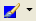 button
allows you to set the background color for the vertex. You may press the button to choose
the color currently displayed in the icon, or you may use the drop-down menu to pick a
previously used color. Additionally, from the drop-down menu you can clear the color or
choose a new color to set.
 By default, colors
applied to a vertex are also applied to the primary disassembly Listing.
By default, colors
applied to a vertex are also applied to the primary disassembly Listing.
The 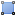
button will group all selected vertices.
Popup Menu Vertex Actions
The
button allows you to set the label for the code block (this will also change the block
header).
The  toggle button allows you to quickly view the contents of the block in a full window
view, which uses the same format as Ghidra's primary Listing. To restore the graph view
from the full window view, click this action again, which will then have this icon:
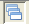.
toggle button allows you to quickly view the contents of the block in a full window
view, which uses the same format as Ghidra's primary Listing. To restore the graph view
from the full window view, click this action again, which will then have this icon:
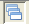.
The 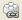
button will show a table of xrefs to the entry point of the currently graphed
function.
 This action will also
appear in the vertex containing the function entry point, for convenience.
This action will also
appear in the vertex containing the function entry point, for convenience.
Grouped Vertex Actions
This section describes vertex
grouping, which is covered later in this document.
The button
allows you to set the background color for the vertex. You may press the button to choose
the color currently displayed in the icon, or you may use the drop-down menu to pick a
previously used color. Additionally, from the drop-down menu you can clear the color or
choose a new color to set.
Group Vertex Coloring Algorithm
This group color feature allows you to easily color large numbers of vertices after
you have grouped them and to keep already set user-defined colors as you are grouping
vertices.
The Function Graph will automatically color your group vertex, depending on the color
state of the vertices being grouped:
- If none, or some but not all, of the vertices being grouped have a user-defined
color, then the group vertex will be made the default color (which you can change from
the options).
- If all of the vertices being grouped have a user-defined color, but that color is
not the same, then the group vertex will be made the default color.
- If all of the vertices being grouped have the same user-defined color, then
the new group vertex will be made the color of the vertices.
When a group vertex has a user-defined color, then all vertices grouped therein will
take on that color.
Via the options you can
disable this feature.
The button
allows you to set the text displayed in the group vertex. Unlike the action when used in a
non-grouped vertex, this action will not edit the label at the start address of the
vertex.
The button will ungroup the
given vertex.
The button will group all selected
vertices.
The button will add to the given group vertex all other selected
vertices.
The difference between group and add to group is somewhat subtle. The
group action creates a new group vertex with each selected vertex as a
child, contained inside of the new grouped vertex. Alternatively, the add to group
action adds to the existing group node chosen all other selected vertices.
The regroup button is included in the header of any uncollapsed vertex,
which is a vertex that is the member of a group, where that group has been ungrouped. This action will regroup (or collapse) all
vertices in the same group as the vertex containing the action. To regroup is to convert
all members of a given group back into a single grouped vertex.
To remove an uncollapsed vertex
from group membership, right-click on that vertex and select Ungroup Selected
Vertices.
Edges
The Edges of the vertices represent a flow from one code block to another. One end of each
edge has an arrowhead that represents the direction of the flow. Furthermore, the color of
the edge provides a visual indication as to the type of the flow. The default flow colors
are:
|
|
Fallthrough - the negative case of a conditional check |
|
|
Conditional - the positive case of a conditional check |
|
|
Unconditional - An unconditional flow |
The following actions are available from the primary view.
Selecting Edges
You may select an edge by left-clicking it. To select multiple edges, hold down the
Ctrl (or the equivalent for your OS) while clicking. To deselect an edge,
hold the Ctrl key while clicking the edge. To clear all selected edges, click in an
empty area of the primary view.
Navigating Edges
Double-clicking an edge will navigate to the one of the incident blocks. The navigation
will first take you to the destination block if it is not already selected. Otherwise, the
navigation will take you to the source block.
Edge Information
You can hover over an edge to get descriptive information. When you hover over an edge you
will be presented with a popup window showing a preview for the source and destination blocks
for the hovered edge. You may disable popups as desired.
Articulated Edges
Some graph layouts create articulated edges, which are edges that contain bends in them to
route around vertices. As you drag vertices around the graph the bends in the articulations
in the dragged edge may disappear if the articulation causes the edge to contain awkward
angles.
Vertex Grouping
| 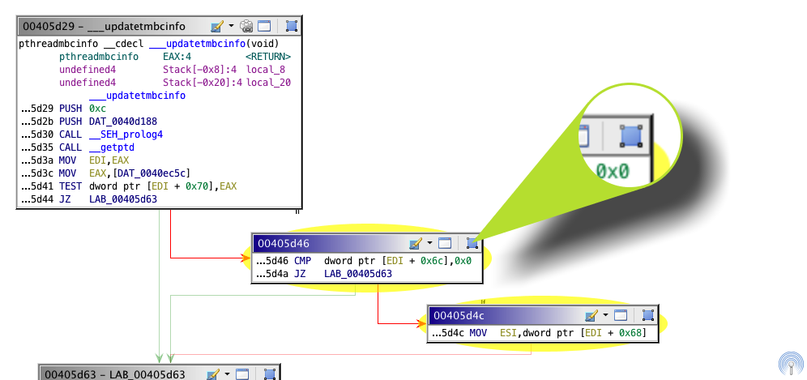
Selected Vertices - Before Grouping
|
You may select 2 or more vertices to be turned into a single grouped vertex. This allows
you to organize vertices to reduce the amount of information displayed in the graph. As an
example, you may wish to place all branches of a switch statement into a single grouped
vertex.
You can select a single vertex
to group. This allows you to annotate a given vertex with text, without editing the label
at the vertex address, which is the default behavior of the edit label action. In addition to setting the text for the
grouped vertex, it will remove the disassembly. In this regard, grouping a single vertex is
a form of information hiding.
Before a group vertex is created you are prompted to enter text that will be displayed in
the body of the group vertex. By default, the titles of each grouped vertex will be listed as
the text of the grouped vertex.
|
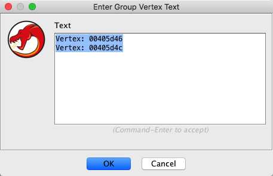
Grouped Vertex Text Input Dialog
|
The default contents of the group vertex text entry dialog are generated from the
titles of each vertex being grouped. When grouping a vertex which is itself a group, the
text of that group vertex will be used in the text entry dialog in addition to its
title.
Grouped vertices may contain other
grouped vertices.
 As you group vertices, the
graph may perform a relayout of the vertices, depending upon the Function Graph Options, as
described below.
As you group vertices, the
graph may perform a relayout of the vertices, depending upon the Function Graph Options, as
described below.
The Ungrouping Process
Ungrouping a grouped vertex will restore to the graph all vertices contained in the
grouped vertex. The layout behavior of the graph after performing an ungroup operation is
dependent upon the graph options; specifically, the Automatic Graph Relayout option.
The default setting for automatic relayout is Vertex Grouping Changes Only. This
means that as you group and ungroup vertices, the graph will relayout its vertices, which
may be a drastic layout change. To prevent the graph from performing a relayout during
grouping or ungrouping, set the option listed above to be Block Mode Changes Only or
Never.
You can access the Function
Graph Options by right-clicking in an empty area of the graph and clicking the
Properties menu item.
You can ungroup all group vertices in the graph via the right-click popup menu by
selecting Ungroup All Vertices. Warning:
this will ungroup all groups, which is an operation that cannot be undone.
Ungrouped vertices can be
regrouped by executing the regroup action. This
action is executed from an individual vertex, but will apply to all vertices in its
group.
Graph Actions
The following actions are buttons in the Function Graph Plugin header.
The  button will perform a copy action in one or more vertex
listings. See the Clipboard help
for more information on using copy in the Listing and Listing-based views.
button will perform a copy action in one or more vertex
listings. See the Clipboard help
for more information on using copy in the Listing and Listing-based views.
The  button will perform a paste action in one or more
vertex listings. See the Clipboard
help for more information on using paste in the Listing and Listing-based views.
button will perform a paste action in one or more
vertex listings. See the Clipboard
help for more information on using paste in the Listing and Listing-based views.
The  button will
navigate to and select the entry point block.
button will
navigate to and select the entry point block.
The  button clear all position and grouping changes made to the graph and
then perform a reload and relayout of the graph.
button clear all position and grouping changes made to the graph and
then perform a reload and relayout of the graph.
The 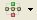 button allows
you to both change the layout used to arrange the graph and to perform a relayout of the
graph using the current layout. Simply pressing the button will trigger a relayout, whereas
clicking on the drop-down arrow will allow you to choose a new layout.
This action allows you to
perform a graph relayout without losing grouping information
The button allows
you to change the fields of the blocks' listing.
By default, the format configuration of the vertices is greatly condensed. This is
done to fit as many vertices on the screen as is possible. You can make the vertices
larger or smaller as you see fit. Form more information about adding and removing fields,
as well as adjusting the size of the fields in the vertex listing display, see the Listing Panel's format
help.
The button will create a Snapshot of the current graph.
Path Highlight Actions
The focus and hover path highlighting modes are designed to help show the flow of
execution through the code blocks in a function, as well as illustrate some of the
structure. Hover highlights are triggered when you move the mouse over a block. Focus
highlights are triggered by selecting a block and only work from one selected block, not
with multiple selected blocks.
The focus highlight paints the edges between certain code blocks with a bold
stroke, thicker than the regular edges. The hover highlight paints a dashed,
thicker stroke that also moves in the direction of flow for a limited period of time.
The path highlighting modes (described in the table below) are available for both
focus and hover, except in special cases, as noted.
| Icon |
Name |
Description |
 |
Show Scoped Flow From Block |
Highlights control flow to code blocks that are only reachable if the current
code block is executed. This is useful to see a local neighborhood of blocks that
follow the current block. |
| 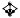 |
Show Scoped Flow To Block |
Highlights control flow from code blocks that must eventually reach the current
code block. This is useful to see a local neighborhood of blocks that precede the
current block. |
| 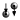 |
Show Paths To/From Block |
Highlights control flow from codes blocks that can reach the current code block,
as well as control flow to code blocks that can be reached from the current block.
This is useful to show all possible flows before and after the current block. |
| |
Show Paths From Block |
Highlights control flow to code blocks that can be reached from the current code block.
This is useful to show all possible flows after the current block. |
| |
Show Paths To Block |
Highlights control flow from codes blocks that can reach the current code block.
This is useful to show all possible flows before the current block. |
| |
Show Loops Containing Block |
Highlights the control flow between all possible looped blocks (cycles) that pass
through the current block. If a function has multiple non-intersecting loops, this
helps resolve the loops from each other in the case that the graph layout has placed
them too close to differentiate. |
| 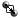 |
Show Paths From Focus to Hover (hover mode only) |
Highlights the control flow from the currently focused code block to the
currently hovered code block. If there are no paths possible, no edges will be
highlighted. This is useful to see reachability between two sections of the
function. |
| |
Show All Loops In Function (focus mode only) |
Highlights the control flow between all possible looped blocks (cycles) in the
current function. This mode doesn't actually depend on a focused code block; instead,
selecting it highlights all loops immediately. |
Function Graph Options
The Automatic Graph Relayout option describes when the
graph will perform an automatic relayout of the vertices as the graph changes. The available
values are:
- Always - always perform a graph relayout anytime the code blocks change or when
graph groups change
- Block Mode Changes Only - only performs a relayout when the code blocks of the
graph change (e.g., from an external edit)
- Vertex Grouping Changes Only - only performs a relayout when the state of the
graph groups changes (during a group or ungroup operation)
- Never - never perform a relayout of the graph automatically
The Navigation History option determines how the navigation history
will be updated when using the Function Graph. The values are:
- Navigation Events - save a history entry when a navigation takes place
(e.g., double-click or Go To event). This setting will record less history. Further,
this setting works the same as the Tool's general history saving mechanism. This
setting should be preferred if you wish to use the navigation actions to go back
to previously visited functions more than individual addresses.
- Vertex Changes - save a history entry each time a new vertex is selected. This
setting allows users to move throughout the graph view while using the navigation actions
to go back to previously visited vertices. This setting will create a much larger
and more detailed history list.
The Scroll Wheel Pans option signals to move the graph vertical when scrolling the
mouse scroll wheel. Disabling this option restores the original function graph scroll wheel
behavior of zooming when scrolled.
The Start Fully Zoomed Out option causes the initial graph to zoom out far enough
that the entire graph is displayed. When this option is off a new graph rendering will zoom
all the way in (no scaling) to the active vertex.
The Update Vertex Colors When Grouping option signals to the graph to make the
color of the grouped vertex be that of the vertices being grouped.
The Use Animation option signals to the graph whether to animate mutative graph
operations and navigations.
The Use Condensed Layout option signals to the
graph to bring vertices as close together as possible when laying out the graph. Using this
option to fit as many vertices on the screen as possible. Disable this option to make the
overall layout of the graph more aesthetic.
The Use Full-size TooltipWhen toggled off, the tooltip for a vertex will be
the same size and layout of the vertices in the graph. When toggled on, the tooltip
for a vertex will be larger, using the layout of the Listing. The larger size is
more informative, but also takes up more space.
The Use Mouse-relative Zoom option signals zoom the graph to and from the mouse
location when zooming from the middle-mouse. The default for this option is off, which
triggers zoom to work from the center of the graph, regardless of the mouse location.
The View Settings option describes how the graph will be zoomed when it is first
loaded. The values are:
- Start Fully Zoomed Out - always start fully zoomed out so that the entire
graph can be seen.
- Start Fully Zoomed In/B> - always start fully zoomed in on the vertex containing
the current location.
- Remember User Settings - keep the zoom level where the user previously left
it.
There are various edge color and highlight color options available to change. The
highlight colors are those to be used when the flow animations take place.
Creating Program Selections
From Paths
You may create Program Selections from the current path
highlights by clicking Program Selection From Hovered Edges and From Focused Edges from the popup menu of a block.
If not paths are highlighted, then these actions will be disabled.
From Hovered Edges and From Focused Edges from the popup menu of a block.
If not paths are highlighted, then these actions will be disabled.
From Code Blocks
You may select all Code Units in a Code Block by
clicking Program Selection Select All
Code Units from the popup menu (or by using the default keybinding, Ctrl-A). This
action will select all Code Units in all selected Code Blocks in the graph. If no Code
Blocks are selected, then a Program Selection will be created for all Code Units in all Code
Blocks in the graph.
Clearing Selections
You may clear the current Program Selection by clicking Program Selection Clear Selection from the popup menu.
Popups
The primary view provides various popup windows to provide information as you hover over
the blocks and edges in the graph. To enable and disable popups in the primary view,
right-click anywhere in the primary view and select the Display Popup Windows toggle
button from the popup menu.
Grouping
The following popup menu items provide additional grouping
functionality.
- Group Selected Vertices -
Groups all selected vertices
- Group Selected
Vertices - Add to Group - Adds the selected vertices to group vertex in the selection.
This action will not be enabled if there is not one, and only one, group vertex in the
selection.
- Remove From Group - Removes the
uncollapsed vertex from its group.
- Ungroup All Vertices - Ungroups
all vertices in the graph, not just those selected or visible. This operation cannot
be undone!
- Ungroup Selected Vertices
- Ungroups the selected group vertices
Panning
There are various ways to move the graph. To move the graph in any direction you can drag
from the whitespace of the graph.
By default, to move the graph vertically you can use the mouse wheel. In previous releases
the scroll wheel was used to zoom. Now there is an option to restore that behavior, the
Scroll Wheel Pans option. When this option is on, you can zoom by holding the
Control key (Command key on the Mac) while using the scroll
wheel. Alternatively, you can move the graph left to right using the mouse while while
holding Control-Alt.
The satellite viewer may also be used to move the primary graphs view by dragging and
clicking inside of the satellite viewer.
Zooming
At full zoom, or block level zoom, each block is rendered at its natural
size, which is the same scale as Ghidra's primary Listing. From that point, which is a 1:1
zoom level, you can zoom out in order to fit more of the graph into the display.
To change the zoom you may use the mouse scroll wheel while holding the
Control key (Command key on the Mac). This works whether
the mouse is over the primary viewer or the satellite viewer. Also, you may use the context
popup menu from the primary viewer in order to quickly zoom to the block level (1:1) or to
the window level (zoomed out far enough to fit the entire graph in the window). These
actions are Zoom to Vertex and Zoom to Window, respectively.
To have the scroll wheel zoom
without holding the Control key, you can disable the Scroll Wheel
Pans option.
To zoom the graph incrementally
using the keyboard you can use the Zoom In and Zoom Out actions. These
actions have default keybindings of Control-Minus and
Control-Equals.
The satellite viewer is always zoomed out far enough to fit
the entire graph into its window.
Vertex Quick Zoom
If you double-click a block header, then the Zoom Level of the
Primary View will change. If the block is not at full zoom (1:1), then the zoom level will
be changed to full zoom. Otherwise, the zoom level will be changed to fully zoomed out. If
you are zoomed past the interaction threshold, then
you can double-click anywhere in the block to trigger a full zoom.
Interaction Threshold
While zooming out (away from the blocks) you will eventually reach a point where you can
no longer interact with the listing inside of the block. The blocks provide a subtle visual
indication when they are zoomed past this level, in the form of a drop-shadow. The image
below shows this drop-shadow. The block on the left is not past the interaction threshold,
but the block on the right is, and thus has a drop-shadow. This example is for illustrative
purposes only and during normal usage all blocks will share the save zoom level. So, if one
block is zoomed past the interaction threshold, all other blocks will be as well.
Interaction with blocks that are past the interaction threshold is simplified; for
example, when scaled past the interaction threshold, dragging in the listing area of a block
will drag the block, instead of making a selection in the listing, as would happen when not
scaled past the interaction threshold.
Painting Threshold
While zooming out (away from the blocks) you will eventually reach a point where contents
each block will not be painted. Instead, each block will be painted by a rectangle that is
painted with the current background color of the block.
Zooming past the painting
threshold will improve the rendering speed of the Primary View.
Saving View Information
The Function Graph Plugin will automatically save your changes to the graph,
specifically, coloring nodes, grouping nodes, zooming and panning. This happens as your
change the function displayed in the graph and when you close the graph window.
Changes made to
Snapshots will not be saved. This is
done to avoid conflict between
changes made to the connected view and any of the snapshots
Provided by: Function Graph Plugin
Related Topics: